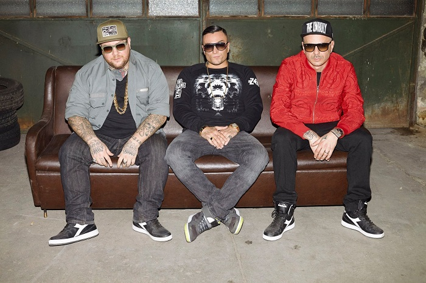
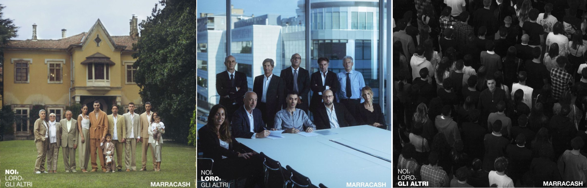

Discografia
In tutto Marracash pubblica complessivamente 8 album sia in gruppo che da solista dal 2004 fino al 2021.
Gli album sono i seguenti:
| All'interno dei Club Dogo |
Da solista |
| PMC VS Club Dogo - The Official Mixtape (2004) |
Marracash (2008) |
| Benvenuti nella giungla (2008) |
Fino a qui tutto bene (2010) |
|
King del rap (2011) |
|
Status (2015) |
|
Santeria ft. Guè (2016) |
|
Persona (2019) |
|
Noi, loro, gli altri (2021) |
Con i Club Dogo

|
PMC VS Club Dogo - The Official Mixtape
Primo album hip hop pubblicato dal cantante all'interno del gruppo Club Dogo il 30 aprile 2004 insieme alla Porzione Massicia Crew.
Questo album contiene 26 tracce con una durata di 1 ora e 5 minuti.
Benvenuti nella giungla
Primo album hardcore hip hop del collettivo Club Dogo pubblicato il 28 marzo 2008.
Al suo interno sono presenti 13 tracce che portano l'album ad avere una durata di 46 minuti e 47 secondi.
|
Da solista
Marracash
Primo album da solista hip hop pubblicato il 13 giugno 2008.
Al suo interno sono presenti 15 tracce con una durata complessiva di 65 minuti e 18 secondi; sono presenti inoltre 5 featuring con gli artisti:
- J-Ax
- Jake La Furia
- Guè Pequeno
- Vincenzo da Via Anfossi
- Co'Sang
Fino a qui tutto bene
Secondo album da solista hardcore hip hop e elettrorap pubblicato il 13 luglio 2010.
Al suo interno sono presenti 12 tracce con una durata complessiva di 42 minuti e 19 secondi; l'unico featuring presente è all'interno della canzone Rivincita con Giusy Ferreri.
Il titolo dell'album trae ispirazione dal film "L'odio" ed a detta dell'artista questo disco risulta essere più personale.
King del Rap
Album con stile alternative hip hop pubblicato il 31 ottobre 2011.
Al suo interno sono presenti 15 tracce con una durata complessiva di 1 ora e 17 secondi. Per quest'album sono stati pubblicati 4 singoli:
- King del Rap
- Didinò
- Sabbie Mobili
- Giusto un giro
Questo album permette al cantante di farsi strada all'interno della storia della musica italiana, arrivando nel podio della classifica italiana e guadagnando un disco di platino per le oltre 50 000 copie vendute.
Status
Quarto album del rapper composto da 18 tracce, di una durata totale di 74 minuti e 18 secondi e nel quale si possono assaporare diversi stili come alternative hip hop, hardcore hip hop e pop rap.
Questo disco venne pubbliato il 20 gennaio 2015; il singolo più famoso è In radio e in questo disco sono presenti diverse collaborazioni come con:
- Achille Lauro nella canzone 'Don'
- Fabri Fibra in 'Vita da star'
- Salmo in 'A volte esagero'
- Coez in 'A volte esagero'
- Tiziano Ferro in 'Senza un posto al mondo'
- Luchè in 'Sushi & cocaina'
- Neffa in 'Nella macchina'
- Guè Pequeno in 'Di nascosto'
Questo disco presenta anche un'edizione deluxe che prende il nome di Vendetta Edition.
Santeria ft. Guè
|
Primo ed unico album della carriera di Marracash composto interamente da brani cantati insieme al rapper Guè Pequeno portando il cd ad essere a due voci.
Questa collaborazione viene pubbliacata il 24 giugno 2016, composta da 15 brani hip hop con una durata di 55 minuti e 51 secondi.
Questi due rapper avevano già collaborato in passato e prima di pubblicare quest'album decidono di pubblicare un mixtape contenente tutte le loro collaborazioni, dandogli il nome di Double Dragon.
Già nel 2016 arrivò primo in classifica ma anche negli ultimi mesi ha riscalato le classifiche con il brano Insta Lova, grazie alla diffusione della canzone tramite video all'interno dei social. |
Persona
Il 31 ottobre 2019 viene pubblicato il sesto album del cantante e viene definitio fin da subito dalla critica come "un classifco istantaneo" e come "Il miglior disco italiano dell'anno" secondo una nota rivista di musica.
E' composto da 15 tracce dallo stile alternative hip hop e conscious hip hop, con una durata di 50 minuti e 52 secondi.
Anche in questo album sono presenti diversi featuring e ogni canzone ha nel titolo una parte del corpo al quale si riferisce, proprio per creare una 'Persona', come definito nel titolo dell'album.
La canzone più famosa di quest'album è una traccia bonus pubblicata il 6 marzo 2020, cantata con Elisa e che prende il nome di Neon - Le ali.
Noi, loro, gli altri
L'ultimo album pubblicato il 19 novembre 2021 dal rapper, che decide di mantenere lo stesso stile dell'album precedente.
Sono presenti 14 tracce con una durata complessiva di soli 42 minuti e 51 secondi; questo album tratta diverse tematiche riguardanti la società, "divisa in squadre e fazioni, ognuna con la sua verità", il diritto all'identità e l'amore.
Anche in quest'album sono presenti diverse collaborazioni, non tutte accreditate ufficialemente, che rendono l'album particolare e unico, tanto da lasciarlo nella top ten per 3 anni di fila.
